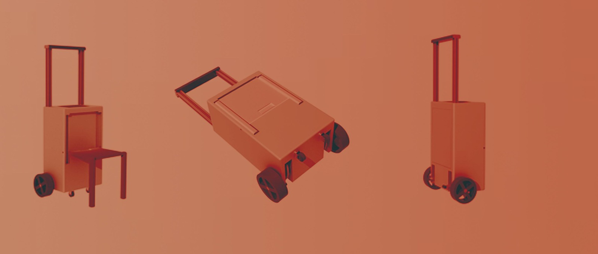

Mobility concept
Convention Companion Case

A luggage concept for cosplay and convention visitors who carry costumes, props, and personal belongings throughout an event. The design combines storage and a convertible seat with proposed powered assistance and stair-travel support. It explores how a portable case could make moving between venues and waiting at events more manageable.